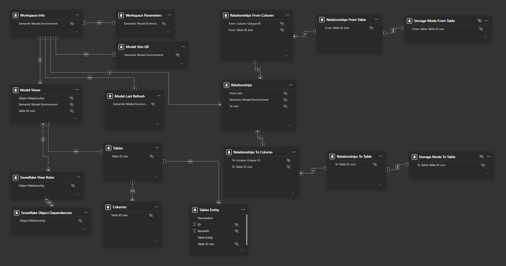

Semantic Model Metadata
A Power BI model that reads the metadata of every other model the BI team runs. One report shows which copies are stale, pointed at the wrong database, or drifting from each other.
The problem
Each semantic model had a copy per environment, each in its own workspace. Every copy carried its own server, database and refresh settings. Nothing showed in one place which copies were stale, read the wrong database, or no longer matched their PROD twin.
How the metadata gets in
- WorkspacesEach model copy, reached through the Power BI XMLA endpoint
- 7 system viewsTMSCHEMA tables, columns, measures, relationships, partitions, expressions, refresh policies
- Power QueryTags each row with model and environment, builds keys, appends the copies
- Semantic model17 tables, plus Snowflake lineage from ACCOUNT_USAGE
- Report7 pages, filtered by model and environment
Every row is tagged with its model and environment, so object IDs that repeat across models never collide. Code available to walk through in an interview.
The model
- Workspace Info is the hub, with one row per model and environment. One slicer on it filters every page.
- Relationships joins to separate From and To copies of Columns and Tables. Each relationship row can then compare its two ends' data types and storage modes.
- Snowflake's OBJECT_DEPENDENCIES view maps each view a model reads to the tables behind it, and which roles can read it.

The real model in Power BI Desktop's model view, all 17 tables. Select it to open full size; on a phone, scroll it sideways.
The 11 checks
| Check | What it catches | Model field | Built as |
|---|---|---|---|
| Data type match | A relationship joining two columns of different data types | Relationships[Data Type Match] | Calculated column |
| Referential integrity | A DirectQuery relationship with "Assume referential integrity" off, so Power BI sends outer joins | Relationships[Referential Integrity Check] | Calculated column |
| Database per environment | A PROD copy reading the pre-prod database, or the reverse | Workspace Parameters[Database Name Issue] | Calculated column |
| Server name | A copy pointed at the wrong Snowflake server | Workspace Parameters[Server Name Issue] | Calculated column |
| Stale refresh | A last refresh older than that model's schedule allows, daily or weekly | Model Last Refresh[Last Refresh is Today] | Calculated column |
| Duplicate column names | The same column name in two tables of one model copy | Columns[Column Name Duplicate Check] | Calculated column |
| Sort-by column | A column sorted by a different column, listed for review | Columns[SortByColumn Diff Column] | Calculated column |
| Missing descriptions | Share of columns with no description | Columns[Description Blank %] | Measure |
| Missing format strings | Share of columns with no format string | Columns[Format String Blank %] | Measure |
| Snowflake database mismatch | A view reading a table from a different database | Snowflake Object Dependencies[Database Miss Match Count] | Measure |
| Missing view role | A Snowflake view no role is granted to read | Snowflake View Roles[SF View Role Blank or Not Blank] | Calculated column |
Two checks in DAX
Referential integrity on DirectQuery relationships
Referential Integrity Check =
SWITCH (
TRUE (),
Relationships[Referential Integrity] = "Off"
&& RELATED ( 'Storage Mode From Table'[Storage Mode] ) = "Direct",
"Ref Should be Turned On",
Relationships[Referential Integrity] = "Off"
&& RELATED ( 'Storage Mode To Table'[Storage Mode] ) = "Direct",
"Ref Should be Turned On",
""
)RELATED follows each relationship row to both of its ends, through the From and To table copies.
Duplicate column names within one model copy
Column Name Duplicate Check =
IF (
CALCULATE (
COUNTROWS ( 'Columns' ),
ALLEXCEPT ( 'Columns', 'Columns'[Column Name], 'Columns'[Semantic Model Environment] )
) > 1,
"Duplicate",
"Unique"
)ALLEXCEPT keeps only the name and the model copy, so the count spans every table in that copy.
The report
- Model InfoRefresh status, size and issue count per copy
- ConnectionsServer, database and warehouse per copy
- PROD vs QADifferences between a model's copies
- MeasuresEvery measure with its DAX
- ColumnsType, format and description gaps
- RelationshipsCardinality, direction and the checks above
- Storage & RefreshStorage mode and incremental refresh per table
Before a release, the team picks a model and sees every copy's refresh, connection and drift on one page.